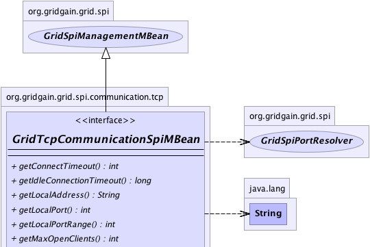
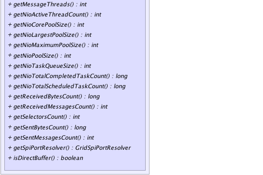

|
|

|

|
|

|

|

|
GridGain™ 3.6.0c
Community Edition |
|||||||||
| PREV CLASS NEXT CLASS | FRAMES NO FRAMES | |||||||||
| SUMMARY: NESTED | FIELD | CONSTR | METHOD | DETAIL: FIELD | CONSTR | METHOD | |||||||||
@GridMBeanDescription(value="MBean provide access to TCP-based communication SPI.") public interface GridTcpCommunicationSpiMBean
MBean provide access to TCP-based communication SPI.
| Wiki | |
| Forum |
|  |
|  |
| Method Summary | |
|---|---|
int |
getConnectTimeout()
Gets connect timeout used when establishing connection with remote nodes. |
long |
getIdleConnectionTimeout()
Gets maximum idle connection time upon which idle connections will be closed. |
String |
getLocalAddress()
Gets local host address for socket binding. |
int |
getLocalPort()
Gets local port for socket binding. |
int |
getLocalPortRange()
Gets maximum number of local ports tried if all previously tried ports are occupied. |
int |
getMaxOpenClients()
Gets maximum count of simultaneously open TCP clients for one remote node. |
int |
getMessageThreads()
Gets number of threads used for handling NIO messages. |
int |
getNioActiveThreadCount()
Returns the approximate number of threads that are actively processing NIO tasks. |
int |
getNioCorePoolSize()
Returns the core number of NIO threads. |
int |
getNioLargestPoolSize()
Returns the largest number of NIO threads that have ever simultaneously been in the pool. |
int |
getNioMaximumPoolSize()
Returns the maximum allowed number of NIO threads. |
int |
getNioPoolSize()
Returns the current number of NIO threads in the pool. |
int |
getNioTaskQueueSize()
Gets current size of the NIO queue size. |
long |
getNioTotalCompletedTaskCount()
Returns the approximate total number of NIO tasks that have completed execution. |
long |
getNioTotalScheduledTaskCount()
Returns the approximate total number of NIO tasks that have been scheduled for execution. |
long |
getReceivedBytesCount()
Gets received bytes count. |
int |
getReceivedMessagesCount()
Gets received messages count. |
int |
getSelectorsCount()
Gets count of selectors used in TCP server. |
long |
getSentBytesCount()
Gets sent bytes count. |
int |
getSentMessagesCount()
Gets sent messages count. |
GridSpiPortResolver |
getSpiPortResolver()
Gets port resolver for ports mapping determination. |
boolean |
isDirectBuffer()
Gets flag that indicates whether direct or heap allocated buffer is used. |
| Methods inherited from interface org.gridgain.grid.spi.GridSpiManagementMBean |
|---|
getAuthor, getGridGainHome, getLocalNodeId, getName, getStartTimestamp, getStartTimestampFormatted, getUpTime, getUpTimeFormatted, getVendorEmail, getVendorUrl, getVersion |
| Method Detail |
|---|
@GridMBeanDescription(value="Approximate number of threads that are actively processing NIO tasks.") int getNioActiveThreadCount()
@GridMBeanDescription(value="Approximate total number of NIO tasks that have completed execution.") long getNioTotalCompletedTaskCount()
@GridMBeanDescription(value="Current size of the NIO queue size.") int getNioTaskQueueSize()
@GridMBeanDescription(value="Core number of NIO threads.") int getNioCorePoolSize()
@GridMBeanDescription(value="Largest number of NIO threads that have ever simultaneously been in the pool.") int getNioLargestPoolSize()
@GridMBeanDescription(value="Maximum allowed number of NIO threads.") int getNioMaximumPoolSize()
@GridMBeanDescription(value="Current number of NIO threads in the pool.") int getNioPoolSize()
@GridMBeanDescription(value="Approximate total number of NIO tasks that have been scheduled for execution.") long getNioTotalScheduledTaskCount()
@GridMBeanDescription(value="Grid node IP address.") String getLocalAddress()
@GridMBeanDescription(value="Port number.") int getLocalPort()
@GridMBeanDescription(value="Local port range.") int getLocalPortRange()
@GridMBeanDescription(value="Maximum idle connection time.") long getIdleConnectionTimeout()
@GridMBeanDescription(value="Flag that indicates whether direct or heap allocated buffer is used.") boolean isDirectBuffer()
@GridMBeanDescription(value="Maximum count of simultaneously open clients for one remote node.") int getMaxOpenClients()
@GridMBeanDescription(value="Count of selectors used in TCP server.") int getSelectorsCount()
@GridMBeanDescription(value="Number of threads used for handling NIO messages.") int getMessageThreads()
@GridMBeanDescription(value="Sent messages count.") int getSentMessagesCount()
@GridMBeanDescription(value="Sent bytes count.") long getSentBytesCount()
@GridMBeanDescription(value="Received messages count.") int getReceivedMessagesCount()
@GridMBeanDescription(value="Received bytes count.") long getReceivedBytesCount()
@GridMBeanDescription(value="Port resolver for ports mapping determination.") GridSpiPortResolver getSpiPortResolver()
@GridMBeanDescription(value="Connect timeout.") int getConnectTimeout()
|
GridGain™ 3.6.0c
Community Edition |
|||||||||
| PREV CLASS NEXT CLASS | FRAMES NO FRAMES | |||||||||
| SUMMARY: NESTED | FIELD | CONSTR | METHOD | DETAIL: FIELD | CONSTR | METHOD | |||||||||
|
GridGain - Real Time Big Data
|
|
|
|